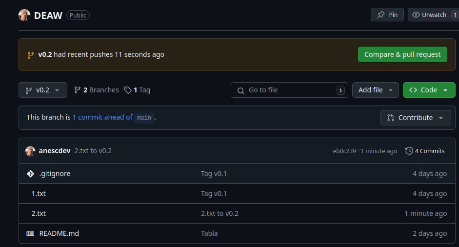
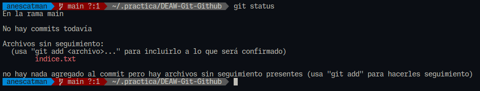
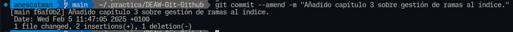
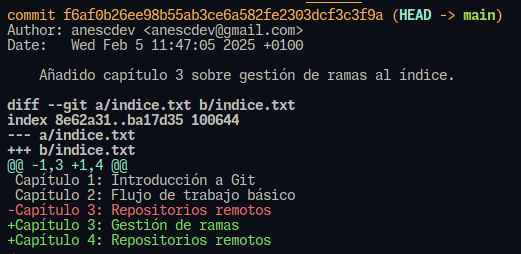
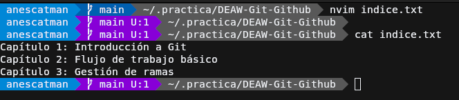
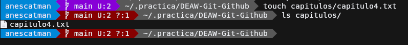
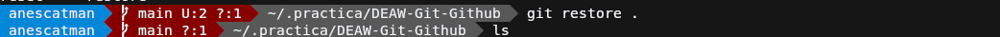
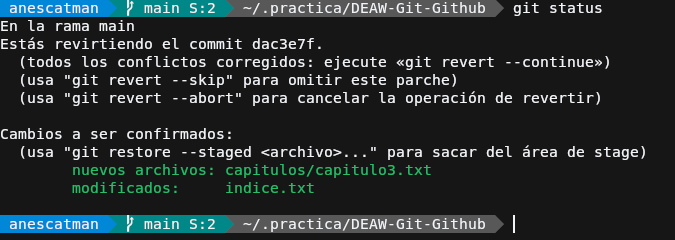

Práctica 5.1: Ejercicios de Git
Ejercicios (I)
Ejercicio 1
Creación del repositorio

Readme
Commit inicial

Push inicial
Ignorar archivos


Añadir fichero 1.txt
Crear el tag v0.1
Subir el tag v0.1

Cuenta de GitHub
Poner una foto en vuestro perfil de GitHub.

Poner el doble factor de autentificación en vuestra cuenta de GitHub.

Uso social de GitHub
Preguntar los nombres de usuario de GitHub de 2 de tus compañeros de clase, búscalos, y sigueles.
Seguir los repositorios DEAW del resto de tus compañeros.


Añadir una estrella a los repositorios DEAW del resto de tus compañeros.

Crear una tabla

Colaboradores
Añadir a https://github.com/dlopezmfp como colaborador


Ejercicio 2
Crear una rama v0.2
Añadir fichero 2.txt
Crear rama remota v0.2


Merge directo
Parte 1
Parte 2

Merge con conflicto
Parte 1
En la rama master poner Hola en el fichero 1.txt y hacer commit

Parte 2
Posicionarse en la rama v0.2 y poner Adios en el fichero "1.txt" y hacer commit.
Parte 3
Posicionarse de nuevo en la rama master y hacer un merge con la rama v0.2

Listado de ramas

Ramas con merge

Ramas sin merge

Arreglar conflicto

Borrar rama
Crea un tag v0.2

Borrar rama v0.2
Listado de cambios

Ejercicios (II)
Creación y actualización de repostorios
Ejercicio 1
Configurar Git definiendo el nombre del usuario, el correo electrónico y activar el coloreado de la salida. Mostrar la configuración final.

Ejercicio 2
Crear un repositorio nuevo con el nombre libro y mostrar su contenido.
Ejercicio 3
Comprobar el estado del repositorio.

Crear un fichero indice.txt con el siguiente contenido:

Comprobar de nuevo el estado del repositorio. 
Añadir el fichero a la zona de intercambio temporal.

Volver a comprobar una vez más el estado del repositorio.
Ejercicio 4
Realizar un commit de los últimos cambios con el mensaje “Añadido índice del libro.” y ver el estado del repositorio.

Ejercicio 5
Cambiar el fichero indice.txt para que contenga lo siguiente:
Capítulo 1: Introducción a Git
Capítulo 2: Flujo de trabajo básico
Capítulo 3: Gestión de ramas
Capítulo 4: Repositorios remotos

Mostrar los cambios con respecto a la última versión guardada en el repositorio.

Hacer un commit de los cambios con el mensaje “Añadido capítulo 3 sobre gestión de ramas”.

Sobra el comando git diff aquí, es para comprobar
Ejercicio 6
Mostrar los cambios de la última versión del repositorio con respecto a la anterior.
Cambiar el mensaje del último commit por “Añadido capítulo 3 sobre gestión de ramas al índice.” 
Volver a mostrar los últimos cambios del repositorio. 
Manejo del historial de cambios
Ejercicio 1
Mostrar el historial de cambios del repositorio.

Crear la carpeta capitulos y crear dentro de ella el fichero capitulo1.txt con el siguiente texto.
Git es un sistema de control de versiones ideado por Linus Torvalds.
Git es un sistema de control de versiones ideado por Linus Torvalds.
Añadir los cambios a la zona de intercambio temporal.

Hacer un commit de los cambios con el mensaje “Añadido capítulo 1.” Volver a mostrar el historial de cambios del repositorio.

Ejercicio 2
Crear el fichero capitulo2.txt en la carpeta capitulos con el siguiente texto.
El flujo de trabajo básico con Git consiste en: 1- Hacer cambios en el repositorio. 2- Añadir los cambios a la zona de intercambio temporal. 3- Hacer un commit de los cambios.

Añadir los cambios a la zona de intercambio temporal.

Hacer un commit de los cambios con el mensaje “Añadido capítulo 2.”

Mostrar las diferencias entre la última versión y dos versiones anteriores.
Para esto buscamos en git log un commit antiguo ya que branch no tenemos y comparamos
Ejercicio 3
Crear el fichero capitulo3.txt en la carpeta capitulos con el siguiente texto.
Git permite la creación de ramas lo que permite tener distintas versiones del mismo proyecto y trabajar de manera simultanea en ellas.
Añadir los cambios a la zona de intercambio temporal.
Hacer un commit de los cambios con el mensaje “Añadido capítulo 3.”
Mostrar las diferencias entre la primera y la última versión del repositorio.
Ejercicio 4
Añadir al final del fichero indice.txt la siguiente línea:
Capítulo 5: Conceptos avanzados
Añadir los cambios a la zona de intercambio temporal.
Hacer un commit de los cambios con el mensaje “Añadido capítulo 5 al índice.”.
Mostrar quién ha hecho cambios sobre el fichero indice.txt.
Deshacer cambios
Ejercicio 1
Eliminar la última línea del fichero indice.txt y guardarlo.
Comprobar el estado del repositorio.

Deshacer los cambios realizados en el fichero indice.txt para volver a la versión anterior del fichero.

Volver a comprobar el estado del repositorio.
Ejercicio 2
Eliminar la última línea del fichero indice.txt y guardarlo.

Añadir los cambios a la zona de intercambio temporal.

Comprobar de nuevo el estado del repositorio.
Quitar los cambios de la zona de intercambio temporal, pero mantenerlos en el directorio de trabajo.

Comprobar de nuevo el estado del repositorio.
Deshacer los cambios realizados en el fichero indice.txt para volver a la versión anterior del fichero.
Volver a comprobar el estado del repositorio.

Ejercicio 3
Eliminar la última línea del fichero indice.txt y guardarlo.
Eliminar el fichero capitulos/capitulo3.txt.

Añadir un fichero nuevo capitulos/capitulo4.txt vacío.

Añadir los cambios a la zona de intercambio temporal.

Comprobar de nuevo el estado del repositorio.
Quitar los cambios de la zona de intercambio temporal, pero mantenerlos en el directorio de trabajo.
Comprobar de nuevo el estado del repositorio.

Deshacer los cambios realizados para volver a la versión del repositorio. 
Volver a comprobar el estado del repositorio.

Algo a tener en cuenta es que el fichero no lo elimina debido a que es un archivo nuevo, para solucionar esto simplemente
usamos el comando git clean, junto a los parámetros:
-f: fuerza el borrado, obligatorio por defecto.-d: muestra que archivos va a borrar, recomendado ejecutar el comando antes con -d para comprobar que borrará y después ejecutarlo sin este para borrar los archivos si nos interesa.
Ejercicio 4
Eliminar la última línea del fichero indice.txt y guardarlo.
Eliminar el fichero capitulos/capitulo3.txt.

Añadir los cambios a la zona de intercambio temporal y hacer un commit con el mensaje “Borrado accidental.”
Comprobar el historial del repositorio.
Se comprueba el historial usando git log.
Deshacer el último commit pero mantener los cambios anteriores en el directorio de trabajo y la zona de intercambio temporal.
Para esto debemos obtener el hash del cambio que queremos revertir, usando el comando anterior, tras eso lo copiamos y lo pegamos en el argumento del comando git revert
El parámetro -n en el comando git revert permite revertir un commit sin que se haga automáticamente un commit nuevo con los archivos revertidos.

Comprobar el historial y el estado del repositorio. 
Volver a hacer el commit con el mismo mensaje de antes.
Deshacer el último commit y los cambios anteriores del directorio de trabajo volviendo a la versión anterior del repositorio.


Comprobar de nuevo el historial y el estado del repositorio.
Gestión de ramas
Ejercicio 1
Crear una nueva rama bibliografia y mostrar las ramas del repositorio.
Ejercicio 2
Crear el fichero capitulos/capitulo4.txt y añadir el texto siguiente
En este capítulo veremos cómo usar GitHub para alojar repositorios en remoto.
Añadir los cambios a la zona de intercambio temporal.
Hacer un commit con el mensaje “Añadido capítulo 4.”
Mostrar la historia del repositorio incluyendo todas las ramas.
Bibliografía incluye todas las anteriores, como podemos comprobar si ejecutamos git log bibliografia
Ejercicio 3
Cambiar a la rama bibliografia.
Crear el fichero bibliografia.txt y añadir la siguiente referencia
Chacon, S. and Straub, B. Pro Git. Apress.
Añadir los cambios a la zona de intercambio temporal.
Hacer un commit con el mensaje “Añadida primera referencia bibliográfica.”
Mostrar la historia del repositorio incluyendo todas las ramas.
Esto se logra mediante git log --all
Ejercicio 4
Fusionar la rama bibliografia con la rama master.
Mostrar la historia del repositorio incluyendo todas las ramas.
Eliminar la rama bibliografia.
Mostrar de nuevo la historia del repositorio incluyendo todas las ramas.
Ejercicio 5
Crear la rama bibliografia.
Cambiar a la rama bibliografia.
Cambiar el fichero bibliografia.txt para que contenga las siguientes referencias:
Añadir los cambios a la zona de intercambio temporal y hacer un commit con el mensaje “Añadida nueva referencia bibliográfica.”
Cambiar a la rama master.
Cambiar el fichero bibliografia.txt para que contenga las siguientes referencias:
Chacon, S. and Straub, B. Pro Git. Apress.
Loeliger, J. and McCullough, M. Version control with Git. O’Reilly.
Añadir los cambios a la zona de intercambio temporal y hacer un commit con el mensaje “Añadida nueva referencia bibliográfica.”

Fusionar la rama bibliografia con la rama master.
Resolver el conflicto dejando el fichero bibliografia.txt con las referencias:
Chacon, S. and Straub, B. Pro Git. Apress.
Loeliger, J. and McCullough, M. Version control with Git. O’Reilly.
Hodson, R. Ry’s Git Tutorial. Smashwords (2014)
Añadir los cambios a la zona de intercambio temporal y hacer un commit con el mensaje “Resuelto conflicto de bibliografía.”
Mostrar la historia del repositorio incluyendo todas las ramas.
Repositorios remotos
Ejercicio 1
Crear un nuevo repositorio público en GitHub con el nombre libro-git.
Añadirlo al repositorio local del libro.
Mostrar todos los repositorios remotos configurados.
Ejercicio 2
Añadir los cambios del repositorio local al repositorio remoto de GitHub.
Cuando no existe una branch con el mismo nombre en la que estamos en el repositorio local, debemos de incluir el nombre de la branch que tendrá al final.
Acceder a GitHub y comprobar que se han subido los cambios mostrando el historial de versiones.